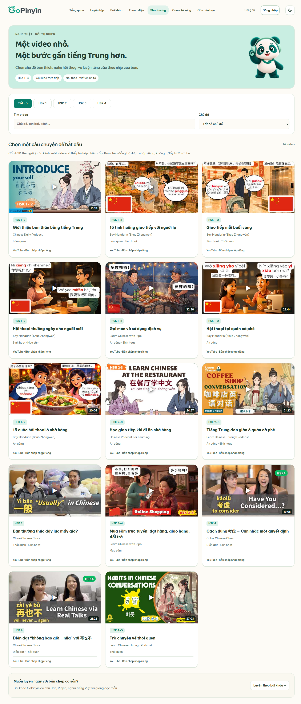
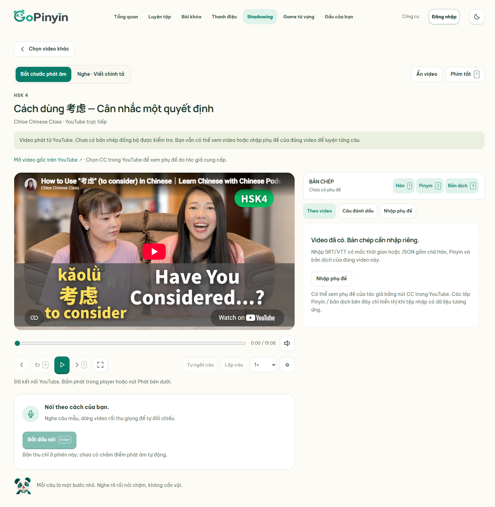
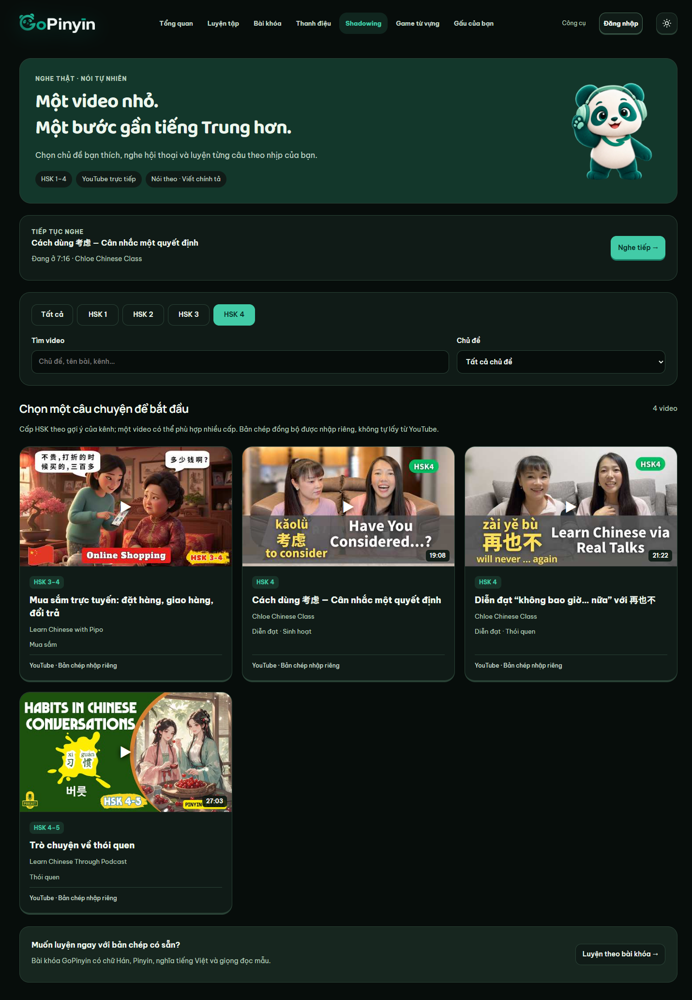
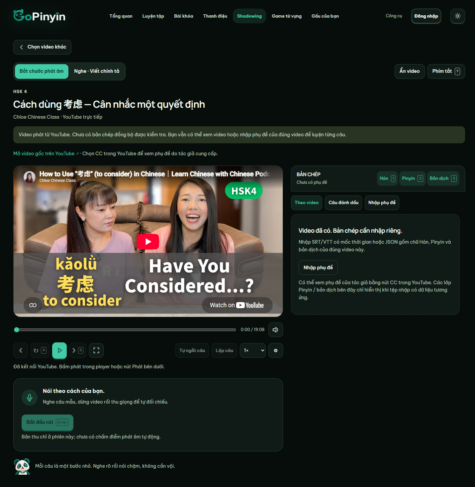
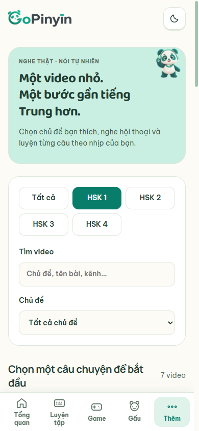

Thư viện · Nền be sáng

GOPINYIN · WEB THẬT · BẢN ĐÃ DUYỆT
14 video YouTube, HSK 1–4, lọc chủ đề/từ khóa, quay lại giữ bộ lọc. Màn học có công cụ bản chép, thu âm và chính tả; phần luyện theo bài khóa cũ vẫn được giữ.
Trạng thái nội dung: 14 video đã có trong danh mục; bản chép đồng bộ đã duyệt chưa được đóng gói. Có thể xem YouTube ngay hoặc nhập JSON/SRT/VTT đúng video. Pinyin/dịch ở cột bản chép chỉ hiện khi có dữ liệu; không lấy chữ từ hình video. Ảnh dưới chụp đúng trạng thái hiện tại.





Xem toàn bộ màn nghe trên điện thoại · Xem toàn bộ danh sách HSK 1 trên điện thoại